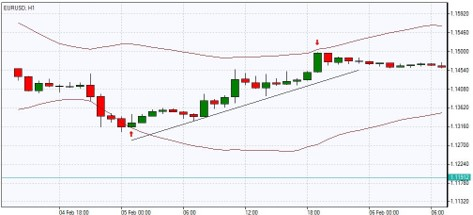

One of the most powerful means of winning a trade is the portfolio of Forex trading
strategies applied by traders in different situations. Following a single system all
the time is
not enough for a successful trade. Each trader should know how to face up to all
market
conditions, which, however, is not so easy, and requires a deep study and
understanding of
economics.
In order to help you meet your educational needs and create your own portfolio of
trading
strategies, IFC Markets provides you both with reliable resources on trading and
with complete information of all the popular and simple forex trading strategies
applied by successful
traders.
The trading strategies we represent are suitable for all traders who are novice in
trade or
want to improve their skills. All the strategies classified and explained below are
for educational purposes and can be applied by each trader in a different way.
There are many types of strategies based on analysis and Experiences.
- Trading Strategies Based on Forex Analysis
- Forex Strategies Based on Trading Style
- Forex Strategies Based on Trading Order Types
- Algorithmic Trading Strategies
1:- Forex Technical Analysis Strategies
Forex technical analysis is the study of market action primarily through the use of
charts for the
purpose of forecasting future price trends. Forex traders can develop strategies
based on various
technical analysis tools including market trend, volume, range,support and
resistance levels, chart
patterns and indicators, as well as conduct a Multiple Time Frame Analysis using
different timeframe charts.
Technical analysis strategy is a crucial method of evaluating assets based on the
analysis and
statistics of past market action, such as past prices and past volume. The main goal
of technical
analysts is not the measuring of asset’s underlying value, they attempt to use
charts or other tools
of technical analysis to determine patterns that will help to forecast future market
activity. Their firm
belief is that the future performance of markets can be indicated by the historical
performance.
2:- Forex Trend Trading Strategy
Trend represents one of the most essential concepts in technical analysis. All the technical analy- sis tools that an analyst uses have a single purpose: help to identify the market trend.The meaning of Forex trend is not so much different from its general meaning - it is nothing more than the direction in which the market moves. But more precisely, foreign exchange market does not move in a straight line, its moves are characterized by a series of zigzags which resemble successive waves with clear peaks and troughs or highs and lows, as they are often called.
As we mentioned above, forex trend is comprised of a series of highs and lows, and depending on the movement of those peaks and troughs one can understand the trend’s type on the market.
Though most people think that foreign exchange market can be either upward or downward, actu- ally there exist not two but three types of trends:
- Uptrend
- Downtrend
- Sideways
Traders and investors confront three types of decisions: go long, i.e. to buy, go short, i.e. to sell, or stay aside, i.e. to do nothing. During any type of trend they should develop a specific strategy.
Note: The buying strategy is preferable when the market goes up and conversely the selling strategy would be right when the market goes down. But when the market moves sideways the third option – to stay aside - will be the wisest decision.3:- Support and Resistance Trading Strategy
In order to completely understand the essence of support and resistance trading strategy you should firstly know what a horizontal level is. Actually, it is a price level indicating either a support or resistance in the market. The support and resistance in technical analysis are the terms for price lows and highs respectively. The term support indicates the area on the chart where the buying interest is significantly strong and surpasses the selling pressure. It is usually marked by previous troughs. Resistance level,contrary to the support level, represents an area on the chart where sell- ing interest overcomes buying pressure. It is usually marked by previous peaks.
In case this is not so, for instance, if the support level comes down to the previous trough, it may signify that the uptrend is coming to the end or at least it is turning into a sideways trend. It is likely that trend reversal from up to down will occur. The opposite situation takes place in a downtrend; the failure of each support level to move lower than the previous trough may again signal changes in the existing trend.
The concept behind support and resistance trading is still the same - buying a security when we expect it to increase in price and sell when expecting its price to go down. Thus, when the price falls to the support level, traders decide to buy creating demand and driving the price up. In the same way, when the price rises to a resistance level, traders decide to sell, creating a downward pressure and driving the price down.4:- Forex Range Trading Strategy
Range trading strategy, which is also called channel trading, is generally associated with the lack of market direction and it is used during the absence of a trend. Range trading identifies currency price movement in channels and the first task of this strategy is to find the range. This process can be carried out by connecting a series of highs and lows with a horizontal trendline. In other words, the trader should find the major support and resistance levels with the area in between known as “trading range”.
Range trading actually works in a market with just enough volatility due to which the price goes on wiggling in the channel without breaking out of the range. In the case the level of support and resistance breaks you should exit range-based positions. The most efficient way of managing this type of risk is the use of stop and limit orders as most traders do. They place stop limit orders when the currency price keeps dropping below the entry point and set the limit order to make profit when the security moves to the top of the range. In other words, while selling a range you should set limit orders down near the support level to take profit and while buying, you should place take profit or- ders at the previously defined resistance level.
5:- Multiple Time Frame Analysis Strategy
Using Multiple Time Frame Analysis suggests following a certain security price over different time frames.Since a security price meanwhile moves through multiple time frames it’s very useful for traders to analyze various time frames while determining the “trading circle” of the security. Through the Mul- tiple Time Frame Analysis (MTFA) you can determine the trend both on smaller and bigger scales and identify the overall market trend. The whole process of MTFA starts with the exact identification of the market direction on higher time frames (long, short or intermediary) and analyzing it through lower time frames starting from a 5-minute chart.
Experienced trader Corey Rosenbloom believes that in multiple time frame analysis, monthly, weekly and daily charts should be used to assess when the trends are moving in the same direction. However, this may cause problems because time frames don’t always align and different kind of trends take place on different time frames. According to him, the analysis of lower time frames gives more information.
6:- Forex Day Trading Strategies
Day trading strategies include scalping, fading, daily pivots and momentum trading.
In case of per- forming day trading you can carry out several trades within a day
but should liquidate all the trading positions before the market closure.
An important factor to remember in day trading is that the longer you hold the
positions, the higher your risk of losing will be. Depending on the trading style
you choose, the price target may change. Below you can learn about the most widely
used day trading strategies.
7:- Trend Riding
There is so much more to riding trends than simply closing your eyes and buying at any point during an uptrend or short-selling at any point during a downtrend. This chapter shows you how you can jump on a trend when the trend is the most robust, rather than when it is about to end. This way you can ride a trend with a higher chance of success.
8:- Breakout Fading
Many false breakouts occur in forex price charts, and the occurrence of these fakeouts provides the perfect opportunity for fading breakouts, that is, trading against those breakouts. In this chapter, I explain why most breakouts fail, and how you can identify high-probability fading opportunities.
9:- Breakout Trading
When currency prices break out of certain price levels, a large sustained move in the direction of the breakout may occur, giving rise to a situation whereby big profits could potentially be captured in the least amount of time. The main problem with trading breakouts is that many of these breakout attempts fail. In this chapter I walk you through several guidelines of how you can better identify potential breakout opportunities for this strategy.
10:- Decreased Volatility Breakout
This strategy is conceptually similar to the strategy of breakout trading, because in both cases the trader will be hoping for a successful price breakout. This particular strategy, however, requires that the forex market registers a period of relative calm and low volatility before the strategy is to be implemented.
11:- Carry Trade
This is a fundamental trading strategy that is highly favoured by institutional investors. In this chapter, I explain how a carry trade works, and highlight some points which you should keep in mind when adopting this strategy in the forex market.